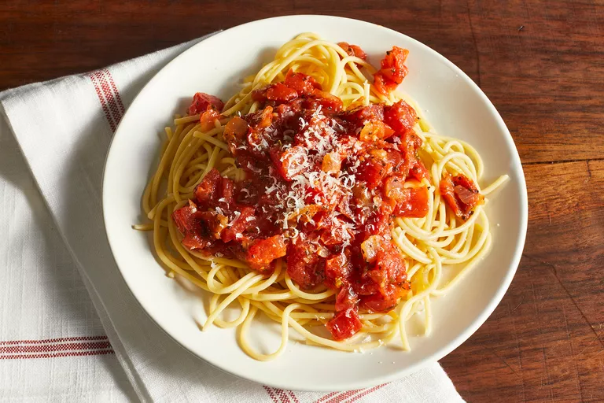

Home
Spaghetti

Description
A wonderful homemade tomato sauce made from fresh tomatoes, onion, garlic, and herbs.
Serve over spaghetti noodles, or use in your favorite lasagna recipe.
Ingredients
- Fresh tomatoes: Try to stick with plum tomatoes, like Roma, San Marzano, and cherry tomatoes.
Be sure to peel the tomatoes (and remove the seeds, if you like, but it's not necessary).
- White sugar: The sugar will balance out the acidity and give the sauce a hint of sweetness.
- Onion: Onions will add a depth of flavor to the sauce as they cook down.
- Spices: Garlic powder, basil, parsley, and salt will increase the flavor of the sauce.
We think the recipe is great as is, but some reviewers like to add additional spices,
like oregano, red pepper flakes, or Italian seasoning.
Steps
- Peel the tomatoes.
- Cook the onion and garlic.
- Add the remaining ingredients and bring to a boil.
Reduce the heat and simmer until the sauce thickens.